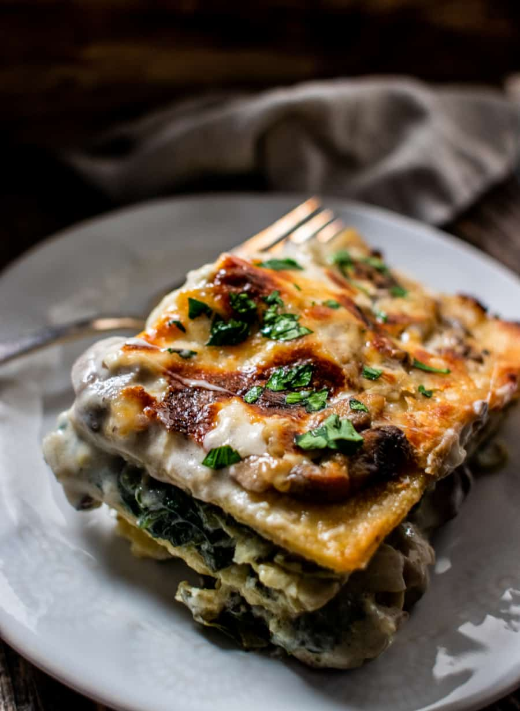
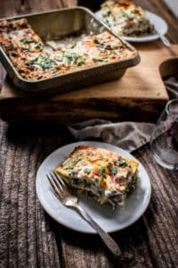
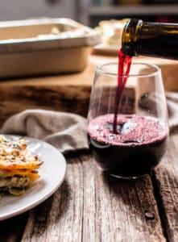

White lasagna

White Lasagna with Mushrooms, Spinach and Artichokes is a delicious departure from the traditional red sauce, meat and cheese version.
Lasagna is one of my favorite dishes to serve for parties. You can make it the day before and stow it in the fridge, and then pop it in the oven an hour before serving and hang out with your guests. I’m a huge fan of the old school meat sauce + cheese version but sometimes I like to mix it up. A white lasagna loaded with rich sauce and delicious vegetable filling always scores a ton of compliments.
This lasanga is made with a mushroom sauce that’s delicious enough to coat pasta on its own. The reipe calls fo portobello or creimini mushrooms and white mushrooms, but you can use your favorites. The sauce is best when you have at least two types. The spinach and artchoke filling is blended with Italian cheeses and fresh herbs, which adds creaminess and brightness. I use canned artichoke hearts, but frozen ones will work too. Just make certain the artichokes aren’t marinated, flavored or full of oil.
Ingrediant
For the sauce:
- 2 tbsp butter
- 1 tbsp olive oil, or more if needed
- 3 cloves garlic, minced
- 1 medium shallot, minced
- 4 oz. Portobello or Cremini mushrooms, chopped
- 4 oz. white mushrooms, chopped
- 2 tsp salt
- 1 tsp white pepper
- 2 tbsp Gluten-Free flour blend (I like Pamela’s GF Artisan Blend)
- ¼ cup dry white wine
- ½ cup gluten-free vegetable or chicken stock
- 1 cup cream
For lasagna and filling:
- 5 oz. fresh baby spinach
- 1 tbsp olive oil
- 8 oz. Mascarpone cheese, room temperature
- 1 cup Parmesan cheese, shaved or shredded
- 1 cup Mozzarella cheese, shredded
- ¼ cup fresh parsley, chopped
- ¼ cup fresh basil, chopped
- 9-10 oz. artichoke hearts in water, drained and roughly chopped
- 1 egg
- 1 tsp salt
- 1 pound gluten-free lasagna pasta prepared according to recipe or package directions
- ½ cup Parmesan or Mozzarella cheese for top
Instructions
Preheat the oven to 350 degrees F
Make the mushroom sauce:
- Warm the butter and olive oil in a large saucepan over medium heat, and sauté the garlic and shallots until translucent, about 2-3 minutes. Add the mushrooms to the pan and sauté until the mushrooms begin to shrink and give off juice (add a bit more oil if needed), about 3-5 minutes.
- Whisk in the flour, then immediately pour in the wine and continue whisking to incorporate. Whisk in the stock and allow the mixture to come to a simmer, stirring occasionally. Reduce the heat to low and whisk in the cream until everything is warmed through and incorporated. Remove from heat and set aside.
Prepare the filling:
- Sauté the spinach in the olive oil in a skillet over medium heat until it wilts, about 2-3 minutes. Pour off any liquid and set aside to cool. In a large mixing bowl, add cheeses, basil, parsley, artichoke hearts, egg and salt, stir to combine. Add the spinach in and mix thoroughly.
Build the lasagna:
- Prepare a deep 8 x 8 baking dish with pan spray. Add a thin layer of the mushroom sauce to the bottom of the pan. Top with a layer of pasta, and then smooth half of the filling over the pasta.
- Top the filling with another layer of pasta, and then add a thick layer of the mushroom sauce, being sure to get plenty of mushroom chunks spread throughout the layer. Add another pasta layer, then the rest of the filling mixture, then add one more pasta layer and top with mushroom sauce and sprinkle with the cheese.
- Cover with foil and bake for 50 minutes, carefully removing the foil for the last 15 minutes of cooking. Let the lasagna cool for at least 20 minutes before slicing and serving.

Notes:
Serve warm and enjoy. maybe with a glass of Pinot Noir or Sangiovese.
